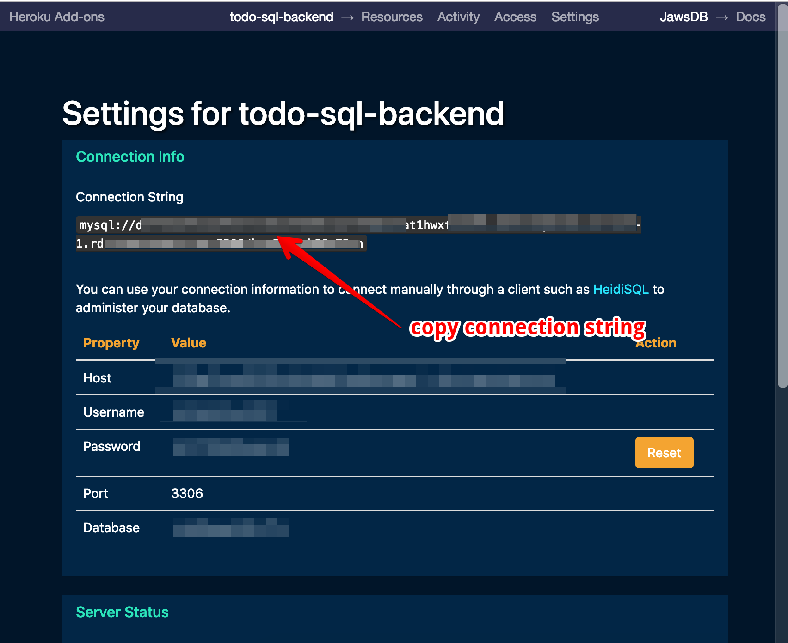
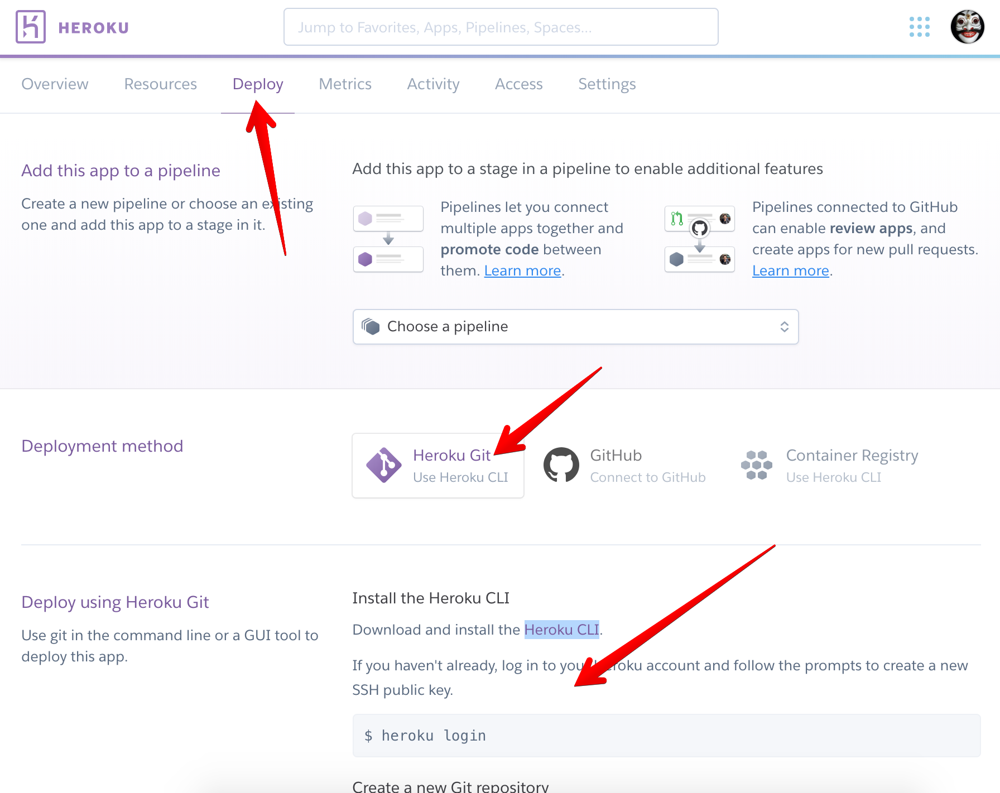

Deployment
Info
This is the last part of 10 steps tutorial on creating basic SQL restful API. Check navigation to navigate to other steps.
In this section we will build and deploy our todo application into Heroku. Deploying to other host may take the different task.
Build Project
Before start deploying the app, we need to build our project into JavaScript file. Project starter provided build and postbuild script to build the appropriate TypeScript file into build directory.
- From Visual Studio Code integrated terminal execute command below to build the project.
$ yarn build
- New directory named
buildwill be created. Copy all content frombuilddirectory and drop it into directory that we will created below for deployment.
Setup Heroku
There are some step need to do before we can deploy our todo application to Heroku
- Create Heroku app, the easiest way is from the Heroku dashboard
- Add JawsDB MySQL Add-ons from Resource tab. Note the add-ons is free but you need to activate your account by providing credit card to be able to use it. You can use PostgreSQL for free version without activation.

- Click the JawsDB MySQL hyperlink it will open in a new tab, than copy database connection string there.

Install Heroku CLI App match with your operating system.
Follow Heroku app deployment step from Deploy tab. Copy all files inside
builddirectory created on the build process and paste inside git repository created on this step.

- Add configuration file
.envand commit it to the heroku server.
Execute DB Migration
We need to update database schema using migration, before that we need to update the DB_URI on the configuration pointing to the database.
- Open
.envfile and update theDB_URIusing connection string we got from JawsDB. - From Visual Studio Code integrated terminal execute the migration
$ npx knex --knexfile knexfile.ts migrate:latest
- Still in the Visual Studio Code integrated terminal execute database seed to seed the default user
$ npx knex --knexfile knexfile.ts seed:run